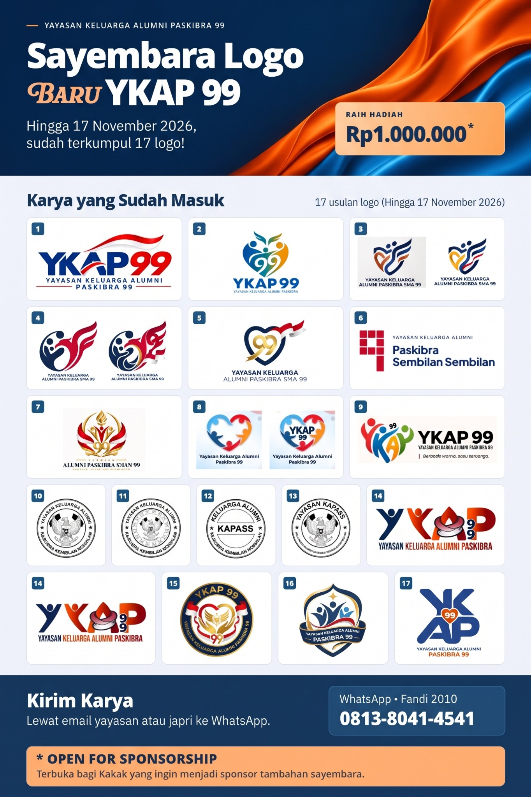

Jejaring lintas angkatan
Banyak alumni sudah membangun karier dan usaha di berbagai bidang. Kenali mereka, bertukar informasi kerja atau proyek, dan temukan rekan untuk berkolaborasi.
Yayasan Keluarga Alumni Paskibra 99
Dan Kakak bisa menjadi bagian dari sejarah bagaimana potensi tersebut terwujud. Caranya? Mulai dari ber-networking/berjejaring dengan sesama alumni Paskibra SMAN 99 lintas angkatan, lalu ikut aktif dalam berbagai kegiatan yang berdampak positif bagi kita semua di masa depan.
Lihat manfaat untuk alumniPaskibra SMA 99 dikenal kompak dan disegani sekolah lain. Kita bangga pada prestasinya dan pada kebiasaan saling menjaga yang tumbuh dari latihan, lomba, dan waktu yang kita lewati bersama.
Para alumni membawa semangat itu saat mendirikan yayasan pada 2019. Berawal dari satu ekstrakurikuler di SMA, kini kita punya yayasan yang terus menyalurkan beasiswa bagi adik-adik Paskibra 99 dan sesama alumni.
Banyak alumni sudah membangun karier dan usaha di berbagai bidang. Kenali mereka, bertukar informasi kerja atau proyek, dan temukan rekan untuk berkolaborasi.
Sedang memilih jurusan, berganti bidang, atau merintis usaha? Kakak bisa berdiskusi dengan alumni yang pernah melewati tahap serupa dan belajar dari pengalaman mereka.
Dengan membantu kegiatan yayasan, Kakak bisa mencoba peran baru, melatih keterampilan, dan membangun portofolio sambil mendukung adik-adik dan sesama alumni.
Kita bercita-cita membangun lembaga pendidikan dan pelatihan serta memperluas pelayanan sosial. Kita ingin kesempatan yang selama ini dibuka untuk adik-adik Paskibra 99 dan sesama alumni bisa dirasakan juga oleh masyarakat di Jakarta dan berbagai daerah di Indonesia.
Setiap angkatan bisa ikut mewujudkannya, misalnya dengan mendampingi adik-adik, berbagi keahlian, atau mempertemukan yayasan dengan mitra di Indonesia dan luar negeri.
Baru lulus, sudah lama tidak bertemu, atau rutin hadir di kegiatan? Kami ingin mendengar pengalaman Kakak. Jawaban ini akan membantu pengurus memilih kegiatan yang layak didahulukan dan cara melibatkan alumni dari setiap angkatan.
17 usulan per 17 November 2026. Lihat satu per satu atau buka poster untuk membandingkan seluruh karya.

Temui lagi teman satu barisan, kenalan dengan kakak dan adik angkatan, dan saksikan logo pilihan alumni diresmikan bersama.
11.00–16.00 WIB
Lokasi akan diumumkan panitia.
Ada pertanyaan soal lokasi atau kegiatan? Hubungi Fandi, angkatan 2010